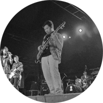
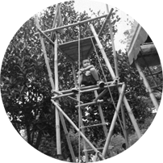

OPEN HOUSE UNIT
30 AGUSTUS 2014
Inti acara dari OHU 2013 yang diadakan di ITB.
Terdiri dari 7 mata acara.
- PenampilanPanggung
dari unit ITB
Utama  Penampilan dari unit SENBUD dan Kajian ITBPanggung
Penampilan dari unit SENBUD dan Kajian ITBPanggung
Kecil Penampilan dari unit Olahraga ITBGelanggang
Penampilan dari unit Olahraga ITBGelanggang
Olahraga- Games dari unit-unit ITBWahana
Karya
 Games BesarWahana
Games BesarWahana
untuk pengunjung OHU
Hiburan Pameran dari unit agama, pendidikan & kajianPameran
Pameran dari unit agama, pendidikan & kajianPameran
Karya Terdapat radioMedia
Terdapat radioMedia
dan bioskop OHU
OHU